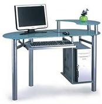

Как правильно выбрать компьютер для офиса.

Сегодня практически в каждом офисе обязательно стоит хотя бы один, а то и несколько компьютеров. Какими же оптимальными характеристиками должен
обладать офисный компьютер, чтобы обеспечивать стабильную и удобную работу в офисе?
Чтобы получить ответ, сначала следует ответить на такой вопрос: «А какие задачи должен выполнять офисный компьютер?». В большинстве случаев на
офисном компьютере работают в основном с текстовыми документами, электронными таблицами и базами данных. Обычно обязательно ставят пакет MS
Office, куда входят Word, Excel, Access, у многих ещё стоит 1С: Бухгалтерия. Очевидно, что вышеперечисленные программы должны работать быстро
и стабильно.
Офисный компьютер обязательно должен быть надежным. Он работает целый день без перерыва, что может сказаться на состоянии железа. Если компьютер
в офисе сломается, то вся работа может оказаться парализована. Поэтому никакие сбои в работе железа недопустимы. Вот почему при выборе компьютера
для офиса в первую очередь надо обращать внимание на надежность его комплектующих, на этом лучше не экономить.
При выборе офисного компьютера следует учитывать возможность подключения внешних устройств, например, принтера, сканера и т.д. Необходимо проверить
наличие нужных слотов и разъёмов на материнской плате. Какая сборка компьютера лучше: заводская или «под заказ»? Самый надёжный и простой способ
- это приобрести в магазине уже собранный компьютер. Если же хотите чего-то особенного, то приобретайте
сборку компьютера онлайн.
Не рекомендую
собирать компьютер онлайн самостоятельно, это требует специальных знаний, лучше доверить сборку специалистам. В любом случае рассмотрим
наиболее оптимальные компоненты компьютера для офиса.
Сердцем любого компьютера является его процессор. Офисные программы не слишком требовательны к ресурсам процессора. Для них вполне подойдёт Intel
Celeron или его более дорогой аналог Pentium. Процессоры на базе AMD, например, Sempron или Athlon, стоят более дёшево, но больше нагреваются, и
поэтому приходится ставить более мощные вентиляторы. Следующая важная составляющая любого компьютера - его материнская плата. При выборе материнской
платы следует обратить внимание на чипсет и производителя. Для офисного компьютера подойдут Biosratl, AsRock, Gigabyte и др. Не менее важный компонент
компьютера - его оперативная память. Память желательно приобрести DDR3 с объёмом от 1 до 2 Гб. Для офисного компьютера достаточно встроенной видеокарты,
но возможно стоит приобрести такую материнскую плату, на которую в случае чего устанавливается внешняя видеокарта.
Жёсткий диск должен иметь объём не меньше 250 Гб и частоту оборотов не ниже 7200 об/мин. И, конечно, желательно чтобы диск не сильно шумел. На мониторе
лучше не экономить, самым оптимальным вариантом для офиса будет 19 дюймовый жидкокристаллический монитор. Выбор привода уже не столь критичен. Ставьте
стандартный DVD-RW привод, этого вполне достаточно. Встроенной звуковой карты и динамика в жидкокристаллическом мониторе для воспроизведения простейших
звуков вполне достаточно. Локальная сеть будет нормально работать и со встроенной сетевой картой. Мышь подойдет самая простая, без всяких расширенных
возможностей. Две кнопки и колёсико - этого вполне хватит для нормальной офисной работы. Особо следует подойти к выбору клавиатуры. Чтобы руки не уставали,
и вообще было удобно работать, следует приобрести эргономичную клавиатуру. Вся комплектация, тоесть системный блок с монитором, клавиатурой и мышкой,
будет стоить в среднем от 380 до 500 у.е..
В заключении приведу две конфигурации системного блока, минимальную и оптимальную:
Минимальная, стоимость 225 у.е.:
процессор Sempron145; частота процессора 2.8 GHz; объем оперативной памяти 1 Гб; тип оперативной памяти DDR3; видеокарта интегрированная; объем жесткого
диска 500 Гб; оптический привод DWD-RW;
Оптимальная, стоимость 259 у.е.:
процессор Athlon 2 X2 210; частота процессора 2.6 GHz; объем оперативной памяти 2 Гб; Тип оперативной памяти - DDR3; объем жесткого диска 500 Гб; наличие
оптического привода DVD±RW;
Жидкокристаллический 19-ти дюймовый монитор можно купить где-то за 150 у.е., мышь и клавиатура обойдутся где-то в районе 15 у.е..
Читайте также:
Что необходимо знать о мышах.
Компьютер ребенку. Правильный выбор.
Следующая статья:
Какой выбрать блок питания для компьютера.